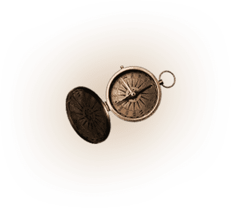

Заполярье – необычное
планетарное пространство.
Это уникальное, равнодушно спокойное и трансформирующее место.
Магнитные бури здесь настолько сильные, что их можно увидеть. Такое потрясающее волшебное явление, как северное сияние – демонстрация этого излучения.
Пересекая линию полярного круга, мы попадаем в пространство, в которое влюбляемся навсегда. Энергетика местной
природы располагает к размышлениям
о смысле жизни и о чудесах, которые происходят вокруг, но мы, к сожалению,
не все замечаем.
Попробуем использовать для этого магнитные излучения и энергию местной природы. Каждый человек стремиться разделить себя на отдельные части, но природа всегда стремится к целостности. Мы позволим разрозненным частям своей личности примагнититься друг к другу.
Если Гиперборея существовала, у нас есть шанс выяснить, что это была за страна, и кто её населял. Если наша история связана с этим местом, мы это узнаем. В любом случае, магнитные потоки планеты активно проходят именно через полюса, и мы сможем подключиться к инфополю всей планеты и получить ответы на самые тревожные вопросы.
С помощью поддержки группы и магнитных полей планеты, мы попытаемся преодолеть все барьеры, чтобы войти в базовое состояние и понять, зачем мы родились, в чем наше предназначение и что нам делать дальше.
Я уверена, что вы влюбитесь
в этот край, и будете возвращаться сюда много раз.И я уверена, что вы вернётесь домой другими.
Более спокойными и уверенными в себе. Проверим?
Встречаемся в аэропорту Мурманска и сразу едем в самый вкусный ресторан, чтобы насладиться морепродуктами и познакомиться друг с другом. (Для вегетарианцев мы тоже приготовили что-то особенное).
После того, как мы насладимся
вкусной едой и обществом друг друга,
выдвигаемся в сторону базы, где мы
и будем размещаться. Ехать 30 км
(это 2 часа по снегу), но мы их потратим
с пользой, будем делать уникальную
практику – магичить северное
сияние. А вечером будет занятие
с Ольгой Михайловной
Веремеевой.
Подъем в 8 утра!
Отправляемся в Териберку!
Световой день в Заполярье
короткий, а увидеть в Териберке
можно много – это и сам поселок, его
новая и старая часть, кладбище кораблей
на берегу Баренцева моря и сам потрясающе
красивый берег Северного Ледовитого
океана – свинцовые воды и
заснеженные сопки.
Поедем на снегоходах
в таинственную часть
побережья, под названием
«Драконьи яйца» там мы сделаем
небольшую медитацию, а потом поедем
к обрыву, где открывается вид на океан и водопад.
Вечером у нас занятие с Ольгой Михайловной.
После занятия едем охотиться за северным сиянием.
Едем в Саамскую деревню.
Посещаем чум, слушаем рассказы
о жизни саамов.
Знакомимся с животным миром
саамов: оленями, хаски,
кроликами и многими другими.
Будем обниматься с оленями,
кормить их и фотографироваться.
Обедаем. И попозже еще раз
выедем за город на последнюю охоту
за сиянием! Вечером мы проведем
занятие в теплом отеле Мурманска.
Вылет в Москву, но перед этим
мы сделаем обзорную экскурсию
по Мурманску – крупнейшему
городу мира, расположенному
за Полярным кругом!
Узнаем, почему город до революции
назывался Романовым-на-Мурмане, а также
почему после Великой Отечественной
войны город называли
«северным Сталинградом».
Ну и конечно посетим
мурманского «Алешу» –
один из самых больших
монументов в России. Сходим
в музей Северного флота, посетим
смотровые площадки с лучшими видами
на город и побываем в храме Спаса на Водах.
ХХ ХХХ руб. – бронирование места
ХХ ХХХ руб. – удобная рассрочка без процентов
(оплата до начала путешествия)
Трансфер из аэропорта и обратно
Проживание в двухместных номерах
Занятия с Ольгой Веремеевой
Завтраки
Выезды
Авиабилеты
Ужин в ресторане Мурманска
Обеды и ужины на турбазе
Мы осознанно не включаем питание в стоимость, так как все наши слушатели уникальны и каждый выбирает индивидуальную систему питания;